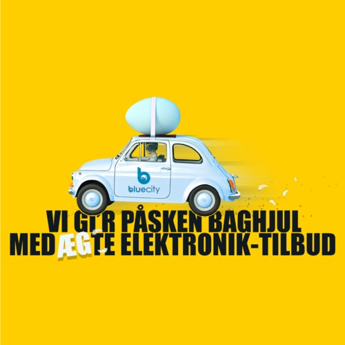

Hvad er dine forårsdrømme?
11. maj 2021
Foråret er her! Hvad er dine forårsdrømme? Hos Blue City giver vi dig 5% på alt elektronik (som i forvejen er billigt) + 50% på udvalgt tilbehør, så du kan opfylde dine elektroniske forårsdrømme.

Brugt vs. Nyt
16. april 2021
 Hvad er den reelle forskel mellem et spritnyt produkt og et brugt produkt fra Blue City? Læs med her og se også hvordan vi udregner prisen, så du kan få det bedste brugte produkt fra Blue City, der passer til dit budget.

Vi gi’r påsken baghjul (Påskeudsalg)
29. marts 2021
Vi elsker påskehygge og har samlet et par gode påsketilbud til dig, som du kan dykke ned i her. Måske er der noget elektronik du lige står og mangler?

Er 5G noget for dig?
25. februar 2021
Hvad ved du egentlig om det nye 5G-netværk? Og hvornår det kommer? Dyk ned i 5G-netværket, og dets fordele og muligheder her.

Valentinsdag hos Blue City
05. februar 2021
Valentinsdag 2021 Hos Blue City holder vi den kærlige forbindelse i en kold tid. Hos Blue City kører vi Valentinstilbud fra mandag d. 7/2 til søndag d. 14/2 2021

Er du klar til januarudsalg 2021?
06. januar 2021
Så blev det tid til januarudsalg! Julen er slut og et nyt år med nye elektroniktilbud står for døren. Skynd dig at kigge med!

Hjemmearbejde & kontorarbejde
23. december 2020
Du får her idéer til, hvilke kontormøbler du bør have, hvilket elektronik udstyr du højst sandsynligt får behov for, og hvordan din indretning af dit hjemmekontor og arbejdsplads kan foregå.

Så er det jul hos Blue City
26. November 2020
Hele år 2020 har været en skør og en forunderlig omgang, og vi har vist alle brug for lidt ekstra julehygge.

Cyber Monday hos Blue City
19. November 2020
Cyber Monday i Blue City falder den 30. november. Her har du muligheden for at spare en masse penge på brugt elektronik. Køb i forkøbet med julegaverne i år.

Black Friday hos Blue City
18. November 2020
Black Friday i Blue City varer en hel uge, hvor du har mulighed for at købe brugt elektronik til bedre priser end normalt. Læs mere hos Blue City.

E-waste i Danmark: Så meget elektronikaffald producerer vi
27. oktober 2020
På verdensplan genereres der 40 millioner tons elektronikaffald hvert eneste år. Det svarer til, at der bliver smidt 800 bærbare computere ud i sekundet. Ja, i sekundet.

Halloween hos Blue City
22. oktober 2020
Hos Blue City har vi skræmmende gode tilbud til Halloween. Du kan gøre et uhyggeligt godt køb fra d. 24/10 - 7/11.

Så kommer den nye iPhone 12 snart - men skal du købe den?
12. oktober 2020
Skal du købe den nye iPhone 12 (som er lige på trapperne)? Måske er det tid til at sælge din gamle smartphone? Læs mere om iPhone 12 hos Blue City

Back to School 2020
03. august 2020
Sommerferien er slut og det er tid til at starte i skole eller på studiet. Har du husket alt hvad du skal bruge til din skolestart eller din studietid?

Blue City fylder 6 år
25. juni 2020
Det fejrer vi med en kæmpe fødselsdagsfest! Vi garanterer at den er sprængfyldt med gode tilbud.

Xbox vs. PlayStation - Titanernes kamp!
17. juni 2020
Er du i tvivl om du bedst kan lide PlayStation eller Xbox? Eller vil du bare vide mere om de to systemer - så kan du læse mere her.
Sådan bør du sortere dit elektronikaffald
8. juni 2020
Der er både en økonomisk og en miljømæssig fordel ved at genbruge elektronik. Bliv klogere på elektronisk affald her.

Guide: Sådan vælger du den rette iPad
14. maj 2020
Er du på udkig efter en iPad, men i tvivl om, hvilken du skal vælge? Så læs vores udførlige guide, og bliv klogere på sagen.

Guide: Mac vs. Windows
7. maj 2020
Vi kigger på svagheder og styrker ved Mac og Windows, så du nemmere kan træffe det rette valg. Læs med hos Blue City.

Guide: Sådan vælger du det rette smartwatch
4. maj 2020
Er du på udkig efter et smartwatch, men er i tvivl om, hvilken model du skal vælge? Så læs denne guide til smarte ure.

Mors dag 2020
29. april 2020
Forkæl din mor med en ny telefon, tablet eller anden form for forbrugselektronik, på mors dag! Tilbuddene gælder fra d. 30/4 t.om. 10/5.

Den komplette tabletguide
28. april 2020
Er du i tvivl om, hvilken tablet du bør vælge? Bliv meget klogere på sagen her på siden, hvor vi stiller skarpt på tablets.

10 ting du måske ikke vidste om smartphones og genbrug
2. april 2020
Vil du gerne blive klogere på genbrug af smartphones og andre elektroniske apparater? Så læs med lige her på siden.

iPhone vs. Android
25. marts 2020
Hos Blue City har vi samlet alt hvad du skal bruge for at finde ud af om din næste telefon skal være en iPhone eller en Android. God læselyst!

Den ultimative Nintendo Guide
5. februar 2020
Hos Blue City har vi samlet alle Nintendo konsoller gennem tiden, og lavet den ultimative guide til hver konsol.

Blue City rabatkoder
3. februar 2020
Hos Blue City stræber vi altid efter at have gode priser - men hold alligevel øje med om vi har rabatkoder her på siden.

5 gode råd til skærmbeskyttelse
19. december 2019
Er du i tvivl om, hvorvidt du skal beskytte din skærm med panserglas? Så læs med lige her på bloggen allerede i dag!

Blue City holder Late Summer Sale!
12. august 2019
Blue City holder Late Summer Sale og vi sørger for 3 uger, spækket med gode tilbud!

2 nemme guides til nulstilling af iPhones og Samsung Galaxy's
07. juni 2019
Hvordan nulstiller du din telefon? Fortvivl ej, vi har samlet to nemme guides til dig lige her!

Fars dag
28. maj 2019
Har du verdens bedste far? Så har vi samlet en masse gode tilbud - til alle de bedste fædre!

Konfirmation 2019
7. maj 2019
Skal du konfirmeres, eller er du blevet konfirmeret? Så se her vores bud på de bedste konfirmations køb!

Blue City's bidrag til sparet ressourceforbrug
27. februar 2019
Tænk genbrug, og køb brugt. Du kan være med til at gøre en indsats, køb brugt elektronik med god samvittighed!

Apex Legends - Det nye Battle Royale fra EA
14. februar 2019
Læs om det nye Battle Royale fra EA lige her. Blive klogere på minimumskrav, alderskrav og hvordan du kommer godt i gang.

Guide til køb af iPhone
25. oktober 2018
Der har aldrig været så mange modeller på markedet før og du nemt kan fare vild blandt de mange specifikationer og reviews. Derfor har vi lavet en guide til dig, så du lettere kan sammenligne de nyeste iPhones og træffe en beslutning du bliver glad for

Skal din smartphone med på festival?
25. juni 2018
Har du heller ikke lyst til at tabe din spritnye iPhone X i smatten? Så lad den blive hjemme og medbring i stedet en "festival telefon".

Hvad er Fortnite?
22. maj 2018
Et af de største fænomener i den digitale verden i starten af 2018 har været Fortnite. Vi har samlet nogle af de vigtigste ting du skal vide om Fortnite forneden.